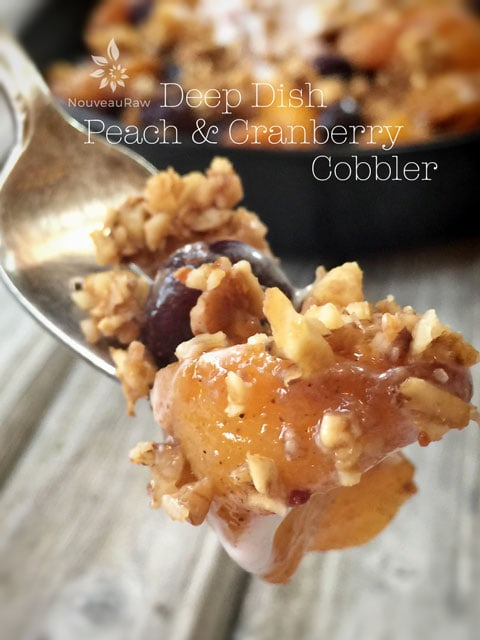

Deep Dish Peach and Cranberry Cobbler

~ raw, vegan, gluten-free ~
Summer is the season to harvest peaches. But they don’t last long off the tree, so once I picked them, the race was on. Their honey-like sweetness pairs tastefully with cranberries and Allspice for this delicious mid-summer treat.
Enjoy the nutty, crunchy topping, sweet, warm peach and cranberry filling…. topped off with a scoop of raw, dairy-free ice cream. In this recipe, I am going to teach you some techniques that help “warm” raw food desserts.
For you ole’ time raw food veterans, this might be old news for you but hang around; you never know if you might learn something new. I do all the time, and I have been at this for quite a while.
For starters, we are going to take advantage of the dehydrator. This will be our “oven” to help “cook” down the peaches, giving them a cooked appearance, as well as concentrating the wonderful peach juices.
We tend to get caught up in the idea that we only dehydrate foods until they are Sahara Desert dry. This isn’t always the case, though; you can dry foods to many different levels, leaving them from moist and warm to dry and crunchy.
So today, we are going to toss the peaches with a couple of ingredients and then slide them into the dehydrator for about 5 hours. This process will cause the peaches to release some of their natural juices, causing them to shrink a little, and giving that cooked appearance. It will also cause them to deepen in color, which will fool anyone into thinking that they just came out of the oven.
If you have an Excalibur, Sedona, or other shelf type dehydrator, you can even place the whole baking dish in to warm it up just before serving. Another trick is to warm the serving dishes before serving up the cobbler. Fill the sink with VERY hot water and place the plates or bowls in the water, letting them become little heat conductors for the cobbler. Or place the plates in the dehydrator while the peaches and crust are in there. There are so many ways to be creative. Enjoy!

Ingredients:
Crust:
Filling:
- 4 cups (750 g) sliced, ripe peaches
- 1/2 cup (100 g) dried cranberries
- 1/2 cup (115 g) water
- 1 tsp (3 g) Allspice seasoning
- 1/4 tsp Himalayan pink salt
Preparation:
Cobbler Crust:
- After soaking the walnuts, pecans, and oats, drain and rinse them. Add them to a food processor fitted with the “S” blade.
- Add the coconut crystals and salt. Pulsing until the texture resembles a small crumble.
- Spread the crust crumble on the non-stick sheet that comes with the dehydrator.
- Dry at 145 degrees (F) for 1 hour, then reduce to 115 (F) for 5 hours.
- Set aside until you are ready to construct the cobbler. If you have any excess cobbler crust, you can store it in a mason jar in the fridge or pantry. Sprinkle over salads, raw ice creams, or enjoy as a snack.
Cobbler Filling:
- Wash and peel the peaches. Cut into sliver-shaped slices and place them in a large bowl.
- I got 8 cuts from each, but this can vary depending on the size of the peach.
- Make sure that they are very ripe to get the most flavor. I was able to peel the skins off with my fingers, which tells you how ripe they were.
- Add the cranberries, water, and Allspice. Gently toss together.
Option 1:
- Create a “bowl” with the teflex sheet that comes with the dehydrator. See the photos below; it is self-explanatory.
- Pour the peach mixture into the “bowl” and spread it out.
- Dry at 145 degrees (F) for 1 hour, then reduce to 115 (F) for 5 hours… same time as the cobbler crust. Stir them around occasionally.
- As the peaches “cook” and soften, the liquid will evaporate, leaving the peaches soft.
Option 2:
- Place the peaches, cranberries, water, and seasoning in a large zip-lock bag. Close and gently massage the peaches, coating everything.
- Dehydrate at 115 (F) for 5 hours… same time as the cobbler crust. Stir them around occasionally but squishing the bag around.
- As the peaches “cook” and soften, it will create a liquid, basically marinating the peaches.
- Once done, place the mixture in a fine-mesh strainer, catching the liquid. This step is optional but blend that liquid with 1/2 cup of date paste to create a delicious syrup to pour over the cobbler.
Serving:
- Serve directly out of the dehydrator to enjoy it warm. It tastes great cold as well, so you decide.
- You can serve this on a plate, in a bowl, in a mason jar, in a cast iron pan, or a goblet. Be creative and make it as elegant or rustic as you wish.
- Place a thin layer of cobbler crust on the bottom, ladle the peaches over that, and top with more cobbler crust.
- Don’t forget to finish each serving with a scoop of vanilla ice cream or a dollop of cashew cream.
- What is Himalayan pink salt, and does it matter? Click (here) to read more about it.
- New to using raw coconut crystals? Read about them (here).
- Are oats gluten-free? Yes, read more about that (here).
- Are oats raw? Yes, they can be found. Click (here) to learn more.
- Do I need to soak and dehydrate oats? Not required but recommended. Click (here) to see why.
Culinary Explanations:
- Why do I start the dehydrator at 145 degrees (F)? Click (here) to learn the reason behind this.
- When working with fresh ingredients, it is essential to taste test as you build a recipe. Learn why (here).
- Don’t own a dehydrator? Learn how to use your oven (here). I do, however honestly believe that it is a worthwhile investment. Click (here) to learn what I use.
© AmieSue.com